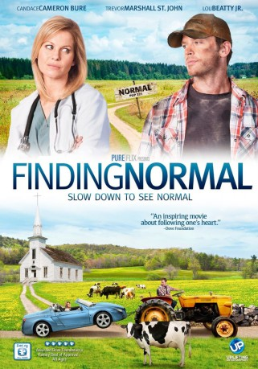

#8373 Normal ist anders
Alternativ: Finding Normal
 
 IMDB-Wertung: 6.2 / 10
IMDB-Wertung: 6.2 / 10  Metascore: 0
Metascore: 0 
Dr. Lisa Leland ist eine brillante junge Chirurgin, der leider jedes Mitgefühl für ihre Patienten fehlt. Ihre Zukunft sieht sie an der Seite ihres reichen Freundes in einer Luxusklinik für die Reichen und Schönen. Auf dem Weg zu diesem neuen Super-Job bleibt Lisa in Normal , einem 300-Seelen-Dorf hängen, wo sie ihr Auto reparieren lassen muss. Außerdem wird sie dort von einem Richter, der zugleich der Arzt und Pastor des Dorfes ist, zu zwei Tagen gemeinnütziger Arbeit verdonnert, weil sie (in Ermangelung eines Geldautomaten) ihre Strafzettel nicht bezahlen kann. So ist sie gezwungen, sich für ein paar Tage auf das Leben und die Leute in diesem Dorf einzulassen und auf ihren gewohnten Luxus und moderne Kommunikationsmittel zu verzichten. Doch der scheinbare Fluch entpuppt sich als Segen. Denn was Lisa dort über sich selbst, das Leben und Gott erfährt, verändert ihre Sichtweise von Grund auf ...
Jahr: 2013
Dauer: 89 Minuten
FSK: 6
Land: USA Studio: UPHETonspuren: DD2.0 - ,
Untertitel:
Auflösung: 1080p (1920x1080) Größe: 5713 MB
Genre: Komödie
Regisseur: Brian Herzlinger
Drehbuch: Chuck Konzelman
Soundtrack: Will Musser
Darsteller:
- Andrew Bongiorno als Dr. Steve
- Valerie Lynn Brett als Mandy
 Dodie Brown als Dr. Maggie Parks
Dodie Brown als Dr. Maggie Parks- Candace Cameron Bure als Dr. Lisa Leland
- Delia Farizath als Maria
- Mark Irvingsen als Lester Toole
 Nina Leon als Hispanic Woman
Nina Leon als Hispanic Woman- Isabel Myers als Kimberly
- Anthony Paderewski als Passerby
 Trevor St. John als Lucas Craig
Trevor St. John als Lucas Craig- Mary Alfred Thoma als Delia Wood
 John C. Coffman als ACLU Attorney (uncredited)
John C. Coffman als ACLU Attorney (uncredited) Gus Rhodes als ACLU Attorney (uncredited)
Gus Rhodes als ACLU Attorney (uncredited) Lou Beatty Jr. als Doc Shelby
Lou Beatty Jr. als Doc Shelby- Pam Dougherty als Rita Caffey
- Jim Elliott als Judge Denton
- Kendrick Hudson als Jimmer
- Ashleigh Jolly als Carly
- Gavin W. Miller als Founder's Day Dance Attendee
- Russell Wolfe als Ron Woll
- Doug Gagnon als Church Congregation Member (uncredited)
Datei: X:\2013(N-Z)\Normal ist anders (2013, FSK6, 1920x1080).mkv seit 28.02.2018
Festplatte: HD 2013(I-Z)-2014(A-Z)
 Es gibt insgesamt 133 Filme in der Gruppe '2013(N-Z)'
Es gibt insgesamt 133 Filme in der Gruppe '2013(N-Z)'